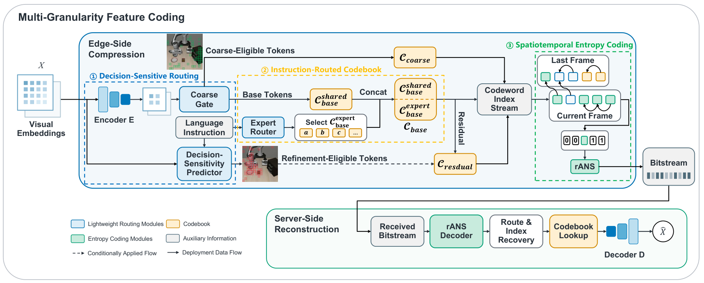
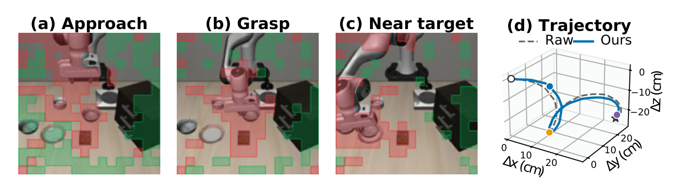

OpenVLA × LIBERO · Overall
- 总体压缩比
- 2273.9×
- Raw / Codec 闭环成功率
- 70.7% / 68.1%
- 新增 Codec 计算耗时
- +3.12 ms/帧
[1] 唐天旭（第一作者）. SplitVLA-Codec: Communication-Efficient Discrete Visual Feature Coding for Split VLA Inference[J]. IEEE Robotics and Automation Letters，审稿中.
面向 VLA 边云协同推理的决策敏感视觉特征压缩。
围绕 VLA 高维视觉中间特征的传输开销，设计决策敏感路由、指令条件共享—专家码本和时空熵编码模块，在边缘侧压缩特征，在服务端重建后继续策略推理。

跨模型适配：完成 π0.5（LIBERO）与 Octo（ManiSkill）的 Codec 适配与验证，覆盖双视角输入和不同策略接口。
对比方法包括 Binary / INT2 量化、PCA + SQ、Product-RVQ、VQ-VAE 和 Scale Hyperprior。
| 链路条件 | Codec | Raw FP16 |
|---|---|---|
| 200 Mbps · 无丢包 | 17.64 ms | 103.08 ms |
| 1 Gbps · 无丢包 | 17.61 ms | 34.69 ms |
| 300 Mbps · 1% 丢包 | 17.93 ms | 94.41 ms |
通信评估结合实测编解码计算与分包级网络仿真。
